Quickly compare Accuracy, Loss, and Confusion Matrices across epochs and kernel sizes.
Kernel 3×3 (epochs 10, 20, 50)
Accuracy
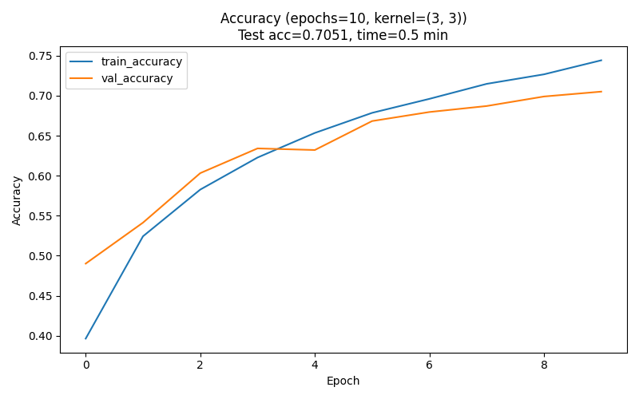
Acc • 3×3 • Epoch 10
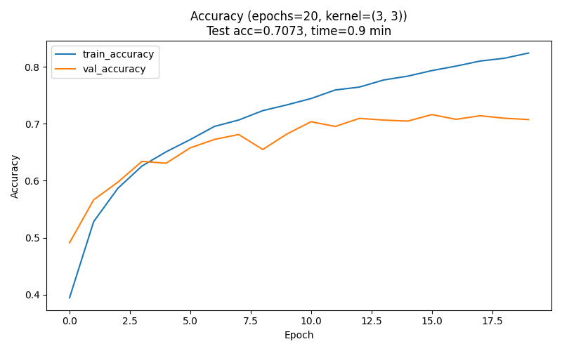
Acc • 3×3 • Epoch 20
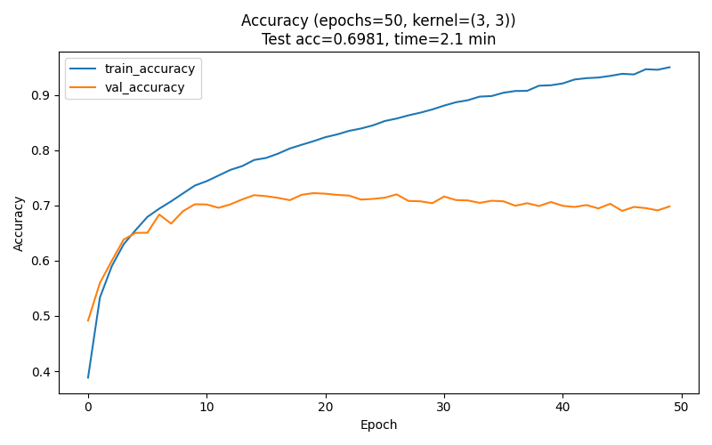
Acc • 3×3 • Epoch 50
Loss
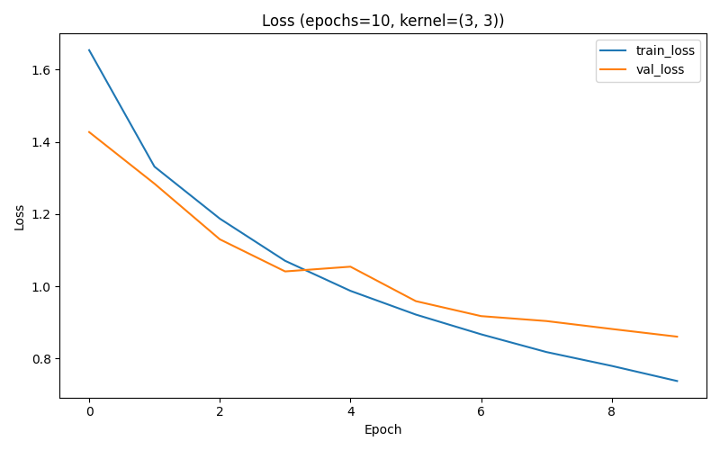
Loss • 3×3 • Epoch 10
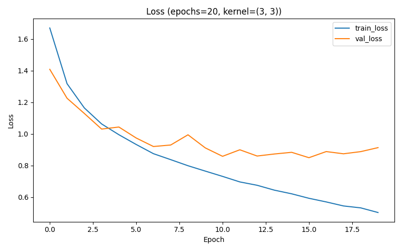
Loss • 3×3 • Epoch 20
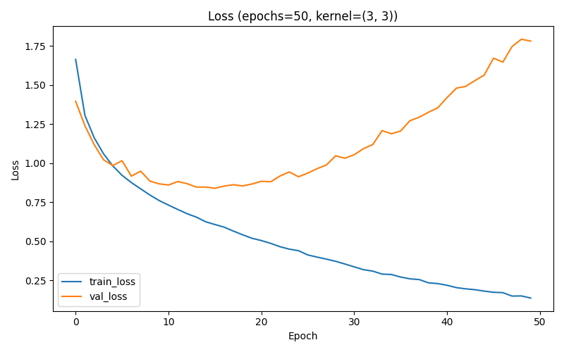
Loss • 3×3 • Epoch 50
Confusion Matrix
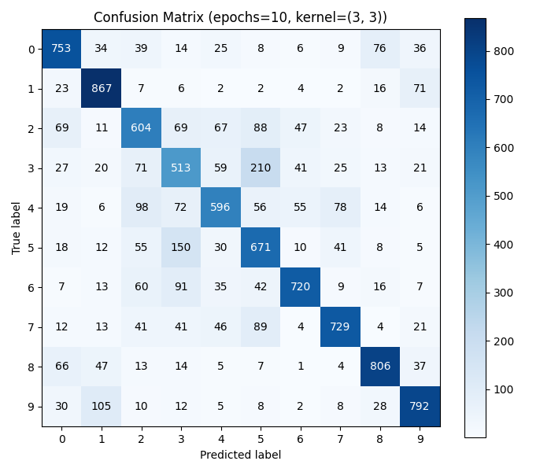
CM • 3×3 • Epoch 10
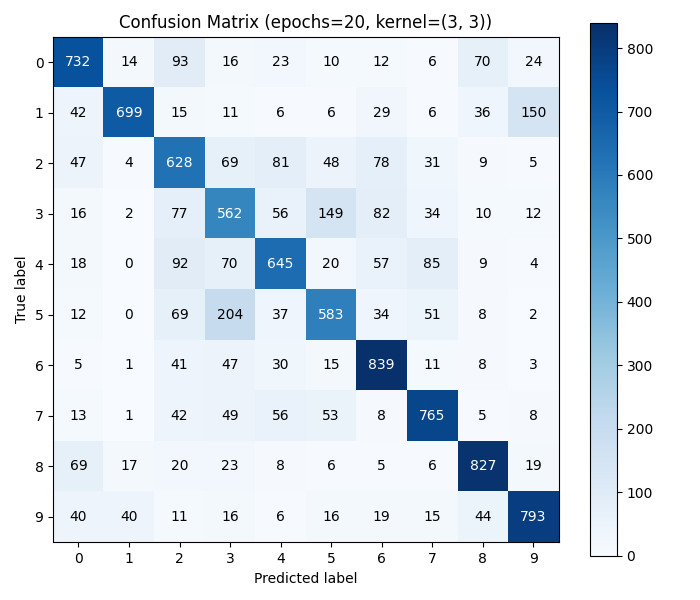
CM • 3×3 • Epoch 20
CM • 3×3 • Epoch 50
Kernel 5×5 (epochs 10, 20)
Accuracy
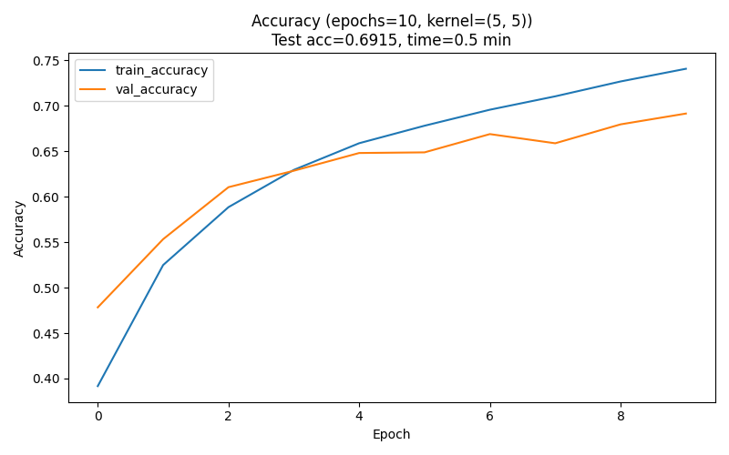
Acc • 5×5 • Epoch 10
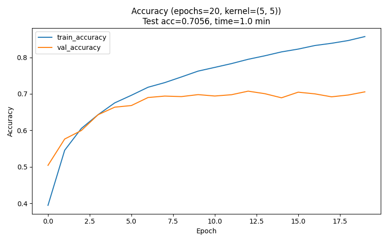
Acc • 5×5 • Epoch 20
Loss
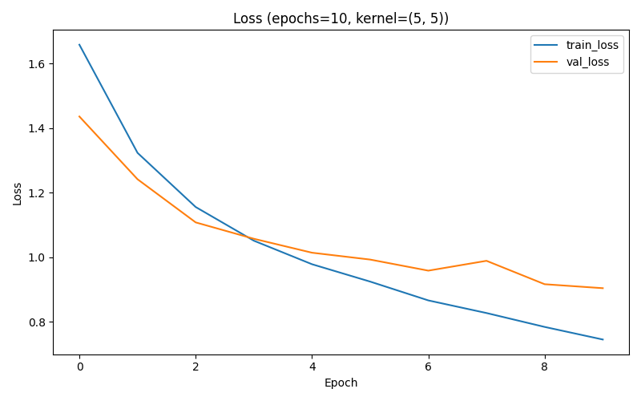
Loss • 5×5 • Epoch 10
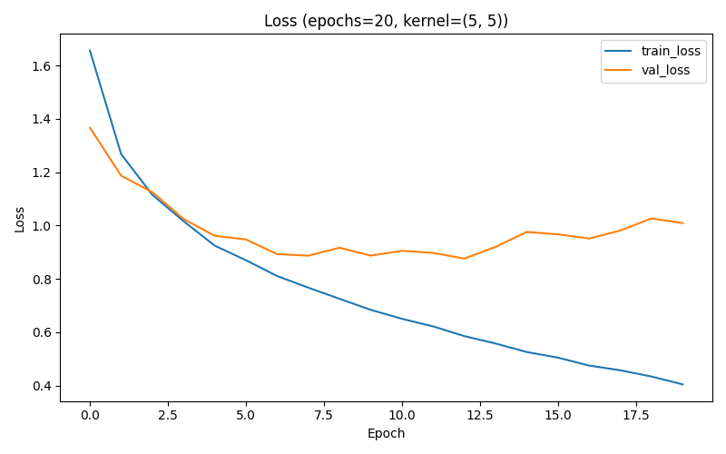
Loss • 5×5 • Epoch 20
Confusion Matrix
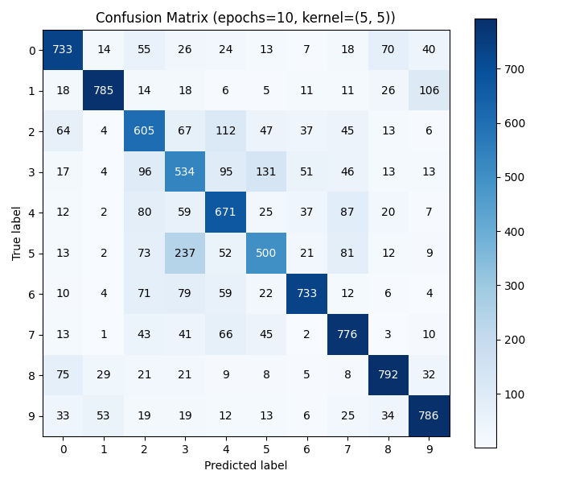
CM • 5×5 • Epoch 10
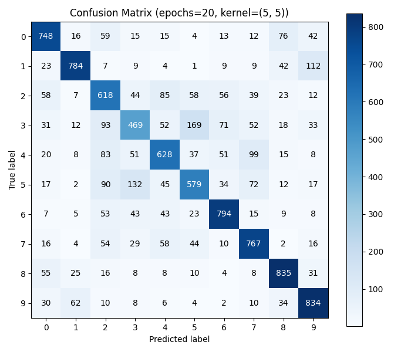
CM • 5×5 • Epoch 20